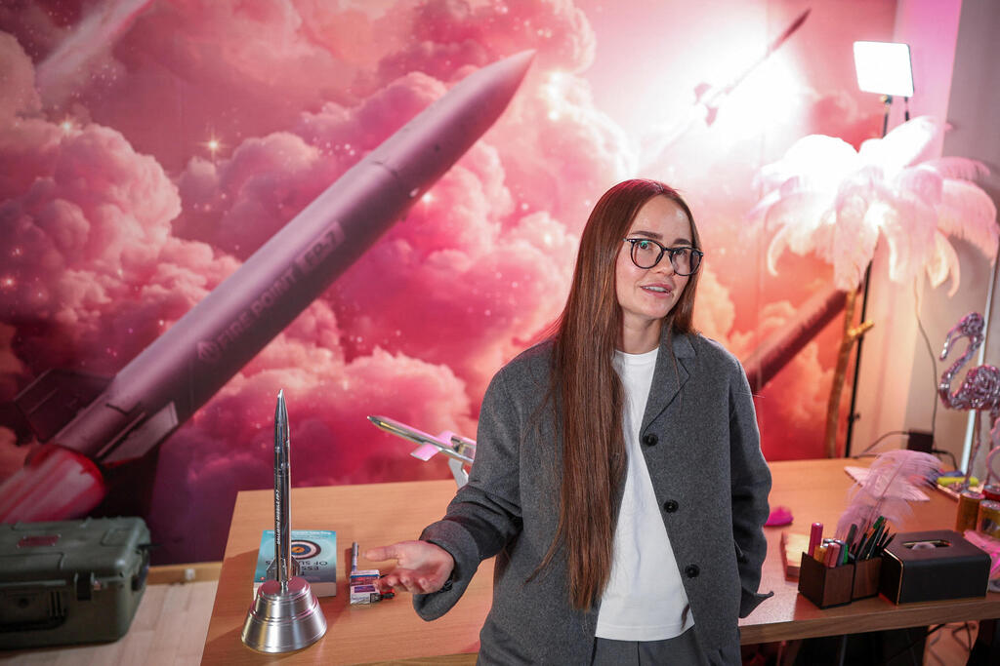

Pink
Retaliation
She was a furniture designer. She taught herself missiles from Soviet manuals. The missile is pink.
Iryna Terekh runs Fire Point, a Ukrainian manufacturer of long-range drones and missiles. This is a note on the brain — and on what it looks like when grief gets an engineering department.

The missile is named Flamingo. Its components are painted in bright colors, including pink, because after a launch someone has to find the fragments in the field — and pink is hard to miss in a Ukrainian field. The employees joke that the color reflects what happens when a woman takes over a defense company.
The joke is the hook. The brain is the story.
The brain
Iryna Terekh, 34, is CEO and CTO of Fire Point: about 7,000 people, long-range drones and missiles striking targets deep inside Russia — a company that, as she told CNBC on August 8, facilitates more than 60% of Ukraine's so-called long-range sanctions
. She studied architecture at Kyiv National University and left at the end of her third year, because she was already running a business and raising two children: It was hard for me to balance everything, so I decided that university could wait.
University could wait. The war didn't. When Denys Shtilerman recruited her as production manager in 2023, he told her: I can make almost anything, but I need you to help me make it happen.
She taught herself how missiles work — Soviet-era manuals, a rocket scientist hired as an adviser — and her years of furniture manufacturing turned out to be the exact right résumé: she proposed a production method that cut the time to manufacture a drone wing from six days to about two and a half hours. Six days to two and a half hours. That is not management. That is alchemy with a Gantt chart.
Back in 2017, talking about her decorative-concrete business, she described management as an exercise in anticipating change: Flexibility and adaptability help businesses. Every day there are difficulties. You have to be ready to solve any problem that arises while working, make decisions quickly, and always have several backup plans.
In wartime, that philosophy acquired a very different meaning.
The basement
The transition began personally. As she and her mother tried to flee Bucha, north of Kyiv, their car came under Russian fire. Damaged, they turned back and hid in a basement for two days while Russian forces took control of the city. They escaped — and what they escaped with was documentation: she documented the fighting around her. Weeks later, Russian forces carried out one of the war's worst massacres of civilians in Bucha. She was one of the witnesses who got out. She is now one of the few women leading a major company in an industry that is about 90% male.
I am one of those women who do not know how to fight,
she wrote in March 2022. But I am sure of one thing: I will absolutely do everything in my power to make sure that nothing like this ever happens again in my country.
The pink
Lempyrλ does not promote war. We do not celebrate the killing of humans, and we do not romanticize what people are reduced to when the shelling starts — we honor the brain that decides what to build next.
Iryna Terekh was a pacifist before the war. She made benches, then concrete anti-tank walls, then cruise missiles — same hands, same backup plans, same speed. And when her factory paints a missile pink so the fragments can be found, the joke carries the whole philosophy in one color: this is not anger lost. This is anger organized, engineered, quality-controlled and shipped.
I am in a more privileged position, because I have the tools to release my anger,
she said. Even after the most difficult night of Russian shelling, I get to wake up and send all my emotions back.
Pink retaliation is what it looks like when grief gets an engineering department.
— Luna Rhodes